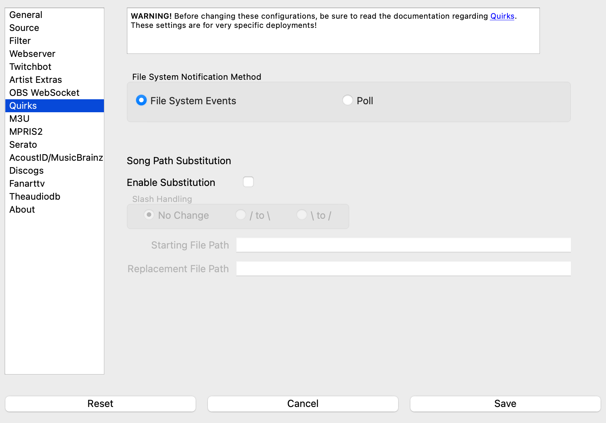

Quirks¶
Under some very specialized circumstances, it may be necessary to ‘nudge’ What’s Now Playing to do something particularly special in order to get the desired impact. The options under quirks allow one to do just that. In general, however, users should stick with the defaults for optimal performance.
{kind=link}
File System Notification Method¶
By default, What’s Now Playing uses operating system facilities to know when input files have changed. If **What’s Now Playing** is running on a different host than the DJ software and **What’s Now Playing** have been configured to read the DJ software’s directory over a network mount (such as SMB) **What’s Now Playing** may not get notified that a file has changed. Selecting the `poll option will force the application to perform a manual file system check. The drawbacks to this method are that more CPU and disk IO is performed and being on delay to get updates. However, the software will not miss events.
NOTE: Changing this value REQUIRES a restart of the What’s Now Playing software.
Song Path Substitution¶
Like the previous issue, the DJ software’s files may reference a file path unlike what What’s Now Playing has access to on the machine where it is running. Setting these values will allow you to do a ‘search and replace’ of any referenced song files.
For example:
Starting File Path is set to
/Volumes/Music/Replacement File Path is set to
/Macintosh HD/Music/
The DJ software says that it read /Volumes/Music/Blondie/Heart_of_Glass.mp3. What’s Now Playing
will instead interpret that the filename is actually
/Macintosh HD/Music/Blondie/Heart_of_Glass.mp3 when reading extra tags, performing recognition, etc.
The Slash Handling setting allows you to switch the direction of all slashes in the filenames. This setting is beneficial when substituting filenames from Windows to other operating systems and vice-versa. The slash changes happen before path substitution, so keep that in mind. For example,
Slash Handling:
\ to /is setStarting File Path:
Z:/avReplacement File Path:
/av
If the original file was Z:\av\Music\Band\Cool Song.mp3, the above settings will change that
to /av/Music/Band/Cool Song.mp3. Another example:
Slash Handling:
/ to \is setStarting File Path:
\avReplacement File Path:
Z:\av
will do the reverse, from /av/Music/Band/Cool Song.mp3 to Z:\av\Music\Band\Cool Song.mp3
NOTE: This quirk is not supported with MPRIS2.